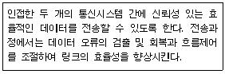

사무자동화산업기사 (2006-08-06 기출문제)
1과목: 사무자동화 시스템
1. 다음 중 동화상 압축 및 복원 알고리즘에 이용되는 것은?
- JPEG
- MPEG
- MIDI
- WAVE
(정답률: 87%)

2. 생산성 평가기준 중 시스템에 유입되는 투입량과 산출량의 양적 비율을 나타내는 것은?
- 유효성
- 창조성
- 인간성
- 효율성
(정답률: 83%)
3. 다음 중 사무자동화 단계별 추진절차가 옳은 것은?
- 분석→계획→운용
- 계획→운용→분석
- 운용→분석→계획
- 분석→추진→계획
(정답률: 69%)
4. 다음 중 데이터베이스의 특성과 가장 거리가 먼 것은?
- 데이터의 무결성
- 데이터의 중복성
- 데이터의 보안성
- 데이터의 독립성
(정답률: 72%)
5. 의사전달의 수단으로 도구나 기계를 사용하는 것을 무엇이라고 하는가?
- Output 기술
- Software 기술
- Human 공학
- Man/machine 인터페이스
(정답률: 86%)
6. 여러 명의 사용자가 사용하는 시스템에서 컴퓨터가 사용자들의 프로그램을 번갈아가며 처리해 줌으로서 각 사용자가 각자 독립된 컴퓨터를 사용하는 것처럼 느끼게 되는 기능과 관련 있는 것은?
- off-line system
- time sharing system
- dual system
- batch file system
(정답률: 83%)
7. OA시스템의 운용 및 유지보수 단계의 설명 중 가장 적합하지 않은 것은?
- 사용자의 편의를 도모하게 한다.
- 누구든지 시스템을 사용할 수 있게 한다.
- 단위 서브시스템별 담당자를 명확히 한다.
- 기기의 고장에 즉시 대처할 수 있는 유지보수체제를 구축해야 한다.
(정답률: 68%)
8. 통합사무자동화시스템의 개념에 대한 설명으로 알맞지 않은 것은?
- OA기기간의 통합은 기기의 공유와 데이터의 공유 등 OA자원의 공유를 포함한다.
- OA의 통합화는 복합화 된 OA에서 단순 OA로 분리시키는 방향을 의미한다.
- OA의 통합화는 조직 내에서 개별적으로 진행되던 OA를 일관성 있게 통합함을 의미한다.
- OA의 통합화는 OA기기의 통합화와 시스템의 통합화를 기반으로 한다.
(정답률: 84%)
9. 광디스크에 레이저광선을 투사하여 이미지 정보를 수록하고 데이터베이스의 색인을 작성하여 필요시 신속한 데이터 검색이 가능한 시스템은?
- 광파일 링 시스템
- 마이크로필름 시스템
- 메시지처리 시스템
- 전자우편 시스템
(정답률: 76%)
10. 사무자동화가 발전할 수 있는 배경 기술과 가장 관계없는 것은?
- 작업자의 창의력 발전
- 소프트웨어 기술의 발달
- 통신기술의 발전
- 하드웨어 기술의 발전
(정답률: 85%)
11. 다음 중 전자우편을 보낼 때 사용하는 프로토콜은?
- HTTP
- SMTP
- FTP
- SNA
(정답률: 82%)
12. 데이터베이스를 구성하는 자료 객체, 이들의 성질, 이들 간의 관계, 자료의 조작 및 이들 자료 값들이 갖는 제약조건에 관한 정의를 총칭해서 스키마라 한다. 다음 중 3단계 스키마에 속하지 않는 것은?
- 외부스키마
- 관계스키마
- 내부스키마
- 개념스키마
(정답률: 67%)
13. 다음 중 POS 시스템과 관계있는 것은?
- OA(office automation)
- MA(management automation)
- AA(accounting automation)
- SA(sales automation)
(정답률: 72%)
14. 계층형 데이터베이스에 대한 설명으로 옳은 것은?
- 서로 관계있는 레코드들이 그물처럼 얽혀있는 구조로 되어있다.
- 각 레코드가 트리구조 형식으로 구성된 모형이다.
- 수학적 이론에 기초하여 테이블 형태로 표현된 모형이다.
- 행과 열로 구성된 2차원 조직이다.
(정답률: 75%)
15. 누산기에 대한 설명 중 맞는 것은?
- 연산의 결과를 일시적으로 기억하는 장치이다.
- 연산명령의 순서를 기억하는 장치이다.
- 연산부호를 해독하는 장치이다.
- 연산명령이 주어지면 연산할 준비를 하는 장치이다.
(정답률: 78%)
16. 다음 중 분산시스템의 장점으로 적합하지 않는 것은?
- 자원과 데이터 공유
- 작업부하 조절 기능
- 처리능력 향상
- 보안 강화
(정답률: 83%)
17. 사무자동화 추진 방법론 중 OA화 대상의 모든 시스템과 전체적인 업무기능 및 계층에 걸쳐 추진되는 방식은?
- 전사적 접근방식
- 부분전개 접근방식
- 계층별 접근방식
- 업무별 접근방식
(정답률: 79%)
18. 다음 중 은행창구 업무 및 항공권 예약업무와 같이 데이터 발생 즉시 처리하는 시스템은?
- 분산자료시스템
- 일괄처리시스템
- 실시간 처리시스템
- 오프라인 시스템
(정답률: 88%)
19. 최근 컴퓨터하드웨어와 소프트웨어의 발전으로 사무자동화기술의 변화를 가져왔다. 사무자동화 기술 발전의 특징에 해당하지 않는 것은?
- 소형화
- 대형화
- 분산화
- 개인화
(정답률: 72%)
20. 화상정보가 축적되어 있는 컴퓨터의 데이터베이스로부터 전화 회선과 TV수상기를 이용하여 사용자가 원하는 다양한 서비스를 대화방식으로 제공하는 것은?
- Videotex
- Teletex
- CATV
- Facsimile
(정답률: 64%)
2과목: 사무경영관리 개론
21. 다음 중 전자문서교환(EDI)과 관계없는 것은?
- machine-readable 의 데이터 형태
- 구조화된 표준양식
- person-to-person 의 데이터 처리
- 응용프로그램 간 데이터 자동처리
(정답률: 64%)
22. 다음 표준화에 대한 설명 중 틀린 것은?
- 일정 시간 내에 일정생산량을 정하는 작업 또는 수단
- 최고의 기준을 만드는 것
- 표준을 만들어 내는 작업수단
- 절차에 대하여 획일성 및 통일성을 가하는 것
(정답률: 85%)
23. 계획을 세우고 이를 달성하기 위하여 인간, 기계, 자료, 방법 등을 조정하는 제 활동을 무엇이라고 하는가?
- 조직
- 관리
- 행동
- 통제
(정답률: 71%)
24. 다음 중 사무 관리자가 효과적인 관리를 위하여 구체적으로 수행해야 할 일과 가장 거리가 먼 것은?
- 적절한 사무관리조직을 만든다.
- 사무작업 계획을 세운다.
- 사무작업을 통제한다.
- 사무직원의 인사문제를 취급한다.
(정답률: 86%)
25. 관리자의 관리 역할에 있어 가장 중요한 것은?
- 조직화, 구조화
- 책임화, 조정화
- 교육화, 훈련화
- 계획화, 통제화
(정답률: 75%)
26. 원칙이란 행동의 지침으로 사용되는 일반성을 지닌 기술이라고 할 수 있다. 다음 중 사무조직을 설계하는 사무 관리자의 조직 원칙과 거리가 가장 먼 것은?
- 목적의 원칙
- 기능화의 원칙
- 집중화의 원칙
- 책임, 권한의 원칙
(정답률: 59%)
27. 다음 중 좋은 목표의 조건이 될 수 없는 것은?
- 포괄적인 것
- 측정 가능한 것
- 실천 가능한 것
- 구체적인 것
(정답률: 86%)
28. 다음 중 사무작업의 표준시간에 관한 것으로 가장 적합한 것은?
- 가장 빨리 일할 수 있는 작업시간.
- 정규 작업시간에 여유시간을 더한 것.
- 최대시간으로 최대의 효과를 내는 시간.
- 종업원의 작업 능력에 따른 평균시간.
(정답률: 67%)
29. 문서처리의 기본적인 원칙에 해당되지 않는 것은?
- 법령적합의 원칙
- 책임처리의 원칙
- 즉일처리의 원칙
- 보수주의 원칙
(정답률: 89%)
30. 다음 중 라인조직의 단점이라고 볼 수 없는 것은?
- 상위자에게 너무 많은 책임이 주어짐
- 조직구성원의 의욕과 창의력 저하
- 독단적인 처사에 의한 폐단을 면하기 어려움
- 책임과 권한의 구분이 명확함
(정답률: 75%)
31. 다음 중 사무 간소화의 의의로 가장 알맞은 것은?
- 사무시간의 양적 축소를 의미한다.
- 사무의 내용, 방법, 절차 등을 감소시키는 것을 뜻한다.
- 사무자동화기기의 축소를 뜻한다.
- 사무를 수행하는 인원의 감축을 의미한다.
(정답률: 81%)
32. 사무계획을 수립절차를 순서대로 바르게 나열한 것은?
- 대안구상→전체의 설정→정보수집→최종안결정
- 대안구상→정보수집→목표달성→최종안결정
- 정보의 수집→정보 분석→목표설정→최종안결정
- 목표설정→정보수집분석→대안구상→최종안결정
(정답률: 66%)
33. 정보관리에 관한 설명으로 적합하지 않는 것은?
- 정보관리의 목적은 정보를 신속, 정확, 편리하게 제공함에 있다.
- 정보관리의 활동범위는 사무관리보다 광범위하다고 볼 수 있다.
- 정보관리의 범위는 정보통제기능에 한한다.
- 정보관리의 대상은 정보의 계획, 처리 및 보관, 제공 등의 기능으로 한다.
(정답률: 75%)
34. 프로그램 저작권에 대한 설명으로 틀린 것은?
- 프로그램저작권은 프로그램이 창작된 때로부터 발생한다.
- 프로그램저작자는 그 프로그램을 공표하거나 공표하지 아니할 것을 결정할 권리를 가진다.
- 프로그램 저작자는 프로그램을 공표함에 있어서 그의 실명 또는 다른 이름을 표시할 권리를 가진다.
- 프로그램 저작권은 그 프로그램이 공표된 다음 연도부터 30년간 존속한다.
(정답률: 87%)
35. 실시의 시기와 순서의 관점에서 그 조직의 활동을 원활히 수행하도록 업무 수행에 필요한 이해나 견해를 마찰이 없도록 결합하고 조화시키는 관리 기능은?
- 계획화
- 조정화
- 통제화
- 조직화
(정답률: 63%)
36. 시간 연구의 방법 중 워크샘플링 방법의 특성이 아닌 것은?
- 직접 관찰하므로 특별한 관측기구가 필요 없다.
- 피관측자에게 여유를 준다.
- 비용이 비교적 적게 든다.
- 관측 대상 사무가 정해지면 누구라도 할 수 있다.
(정답률: 55%)
37. 다음 중 정보통신망을 구축하는 효과가 아닌 것은?
- 경제적 효과
- 신뢰성 향상
- 처리능력 향상
- 프로토콜의 다양화
(정답률: 78%)
38. “통제란 어떠한 일의 성취도를 계획에 비추어 측정하고 계획상의 목표달성을 보장 할 수 있도록 계획으로 부터의 차질을 시정하는 조치” 라고 정의한 학자는?
- 쿤츠(H. koontz)와 오도넬(C. o'Donnell)
- 카스트(F. E. kast)
- 힉스(C. B. Hicks)
- 리빙스턴(R. T. Livingston)
(정답률: 73%)
39. 다음 중 전자상거래의 개념과 관련이 가장 적은 것은?
- CALS
- EDI
- EC
- LAN
(정답률: 81%)
40. 다음 중 EDI의 직접적인 구성요소와 가장 거리가 먼 것은?
- 표준화
- 통신네트워크
- 통합 데이터베이스
- 변환 소프트웨어
(정답률: 41%)
3과목: 프로그래밍 일반
41. C 언어의 출력 문에서 데이터 형식을 규정하는 서술자로서 의미가 옳지 않은 것은?
- %d : 8진 정수
- %c : 문자
- %s : 문자열
- %x : 16진 정수
(정답률: 66%)
42. 시스템 프로그래밍 언어로 사용하기에 가정 적당한 것은?
- COBOL
- C
- BASIC
- FORTRAN
(정답률: 93%)
43. 구조화 프로그래밍(Structured Programming)의 기본 제어 구조가 아닌 것은?
- 반복구조(iteration)
- 선택구조(selection)
- 그물구조(network)
- 순차구조(sequence)
(정답률: 79%)
44. 프로그래머에 의해 발생하는 인터럽트로서, 보통 입/출력 수행, 기억장치 할당, 오퍼레이터와의 대화를 위해 발생하는 것은?
- Program check interrupt
- External interrupt
- I/O interrupt
- Supervisor call interrupt
(정답률: 59%)
45. C언어에서 정수형 변수를 선언할 때 사용하는 자료 형은?
- char
- int
- float
- double
(정답률: 77%)
46. COBOL 언어의 PERFORM 문, C 언어의 FOR문에 해당되는 것은?
- 반복문
- 종료문
- 입출력문
- 선언문
(정답률: 75%)
47. 스트림 자료 활용의 예가 빈번한 언어는?
- COBOL
- SNOBOL4
- C
- FORTRAN
(정답률: 65%)
48. 이항(Binary)연산자 표현에 적합하며, 두 피연산자 사이에 연산 기호가 놓여지는 표기법은?
- 전위(prefix) 표기법
- 중위(infix) 표기법
- 후위(postfix) 표기법
- 자동(auto) 표기법
(정답률: 88%)
49. 프로그램의 오류 수정 작업을 위하여 사용되는 소프트웨어를 무엇이라 하는가?
- linker
- array
- loader
- debugger
(정답률: 90%)
50. 운영체제를 수행 기능에 따라 분류할 경우 제어 프로그램에 해당하지 않는 것은?
- 감시 프로그램
- 데이터 관리 프로그램
- 작업 제어 프로그램
- 문제 프로그램
(정답률: 70%)
51. 이항(Binary) 연산자 연산에 해당하지 않는 것은?
- AND
- MOVE
- OR
- XOR
(정답률: 91%)
52. 고급언어로 작성된 프로그램을 구문 분석하여 각각의 문장을 문법 구조에 따라 트리 형태로 구성한 것은?
- 피라미드(Pyramid) 트리
- 메뉴(Menu) 트리
- 덤프(Dump) 트리
- 파스(Parse) 트리
(정답률: 92%)
53. 운영체제의 성능 평가 항목으로 거리가 먼 것은?
- 처리능력
- 비용
- 사용가능도
- 신뢰도
(정답률: 90%)
54. 특정한 업무를 해결하기 위한 목적을 가지고 작성된 응용프로그램을 의미하는 것은?
- Operation System
- System Program
- DBMS
- Application Program
(정답률: 76%)
55. 인터프리터(interpreter)기법을 사용하는 언어는?
- C
- BASIC
- COBOL
- FORTRAN 언어
(정답률: 77%)
56. 고급언어(high level language)에 해당하지 않는 것은?
- COBOL
- C
- Assembly
- FORTRAN
(정답률: 85%)
57. 고급언어로 작성된 원시프로그램을 해석하고 분석하여 목적 프로그램을 생성하는 것은?
- Operating system
- DBMS
- Spread sheet
- Compiler
(정답률: 88%)
58. C언어에서 이스케이프 시퀀스의 설명이 옳지 않은 것은?
- \n : null character
- \r : carriage return
- \f : form feed
- \b : backspace
(정답률: 80%)
59. C언어에서 사용하는 기억 클래스의 종류가 아닌 것은?
- 자동변수
- 레지스터 변수
- 메시지 변수
- 정적 변수
(정답률: 66%)
60. BNF에 사용되는 기호 중 선택의 의미를 갖는 것은?
- ::=
- <>
- |
- {}
(정답률: 71%)
4과목: 정보통신 개론
61. 다음 중 초고속정보통신망의 ATM에 대한 설명으로 틀린 것은?
- 48 Byte의 페이로드(Payload)를 갖고 있다.
- 5 Byte의 헤더를 갖고 있다.
- 멀티미디어 서비스에 적합하다.
- 동기식 전달모드로 고속데이터 전송에 사용된다.
(정답률: 59%)
62. 다음 중 패킷(Packet)을 가장 잘 설명한 것은?
- 회선교환방식에 주로 사용되며, 주 스테이션 사이에 통신을 할 수 있는 경로가 제공되는 경우를 말한다.
- 접속 혹은 다중화의 목적으로 메시지를 정해진 크기의 비트 수로 나눈 다음 정해진 형식에 맞추어 만들어진 데이터의 블록이다.
- 버스형망, 회선 교환망, 성형망 등의 어떤 망구조에서도 편리하게 사용 할 수 있는 데이터 교환방식에 가장 적합한 전송회선이다.
- 경로 변경방식에 따라 교환기, 통신회선 등의 장애가 발생할 경우에 대체 경로를 선택할 수 없어 네트워크의 신뢰성이 낮다.
(정답률: 62%)
63. 정보통신시스템의 기본적인 구성에서 이용자와 정보통신 시스템과의 접점에서 데이터의 입. 출력을 담당하는 것은?
- 단말장치
- 정보처리시스템
- 데이터전송회선
- 변복조장치
(정답률: 63%)
64. 다음 설명 중 틀린 것은?
- IBM의 SNA는 컴퓨터 간 접속을 용이하게 한 체계화된 네트워크 방식이다.
- 본격적인 데이터 통신의 시초는 미국의 반자동 반공시스템(SAGE)이다.
- 온라인시스템의 대량보급으로 정보통신을 위한 표준화의 필요성이 줄어들었다.
- 데이터전송은 컴퓨터에 의해 처리된 정보의 전송이라 할 수 있다.
(정답률: 77%)
65. 디지털 교환망에 데이터 회선을 구성하여 디지털 신호전송 시에 사용되는 DCE는?
- MODEM
- DSU
- DTE
- Remote Processor
(정답률: 64%)
66. 다음 정보통신시스템의 구성요소 중 목적지 주소정보를 기반으로 목적지까지의 경로를 설정하여 전달하는 기능을 수행하는 것은?
- 단말장치
- 변복조장치
- 교환장치
- 다중화/역다중화 장치
(정답률: 48%)
67. OSI 7계층에서 다음 설명에 맞는 계층은?

- 물리계층
- 데이터링크계층
- 응용계층
- 표현계층
(정답률: 76%)
68. 다음 중 온라인시스템과 관계없는 것은?
- 실시간(real-time)처리에 이용된다.
- 데이터의 전송과 처리과정에 사람이 개입되지 않는다.
- 정보전송장치와 정보처리장치 사이에 자기테이프 등의 기록매체를 경유한다.
- 데이터 발생지의 단말기가 원격지에 설치된 컴퓨터와 통신회선을 통해 연결된다.
(정답률: 60%)
69. 공중 데이터망에서 사용되는 DTE/DCE 간의 상호접속에 대한 정의를 규정한 권고안은?
- x.4
- x.24
- x.75
- x.400
(정답률: 57%)
70. 다음 중 패킷 교환망의 주요기능과 관계없는 것은?
- 오류제어
- 전용선
- 트래픽제어
- 논리채널
(정답률: 46%)
71. ISDN의 통신 서비스 중 베어러서비스에 해당되는 것은?
- 계층1에서 계층3까지
- 계층4에서 계층7까지
- 계층1에서 계층7까지
- 계층2에서 계층5까지
(정답률: 58%)
72. 데이터 통신에서 송/수신이 쌍방으로 동시에 통신이 가능한 전송방식은?
- Simplex
- Half-Duplex
- Full-Duplex
- Multiplex
(정답률: 61%)
73. 다음 전송제어문자 중 본문의 시작을 알리는 것은?
- STX
- ETX
- DLE
- NAK
(정답률: 78%)
74. 디지털 변복조에 사용되는 방식이 아닌 것은?
- 동기편이 방식
- 진폭편이방식
- 주파수편이 방식
- 위상편이방식
(정답률: 72%)
75. 다음 중 IP주소 형식 중에서 호스트를 가장 많이 할당할 수 있는 인터넷 주소 클래스는?
- 클래스A
- 클래스B
- 클래스C
- 클래스D
(정답률: 59%)
76. 다음 중 HDLC(High-level Data Link Control) 프레임 구조의 내용이 아닌 것은?
- 제어 필드
- 플래그 필드
- 주소 필드
- 시작 필드
(정답률: 66%)
77. 다음 중 전송오류 제어방식이 아닌 것은?
- Stop-and-Wait ARQ
- Go-back-N ARQ
- Selective-Repeat ARQ
- Store-and-Forward ARQ
(정답률: 65%)
78. LAN으로 널리 이용되는 이더넷(Ethernet)에서 사용되는 방식은?
- CSMA/CD
- 토큰링
- 토큰버스
- DQDB
(정답률: 76%)
79. 아날로그 음성신호를 표본화(sampling)하면 어떤 형태로 되는가?
- PAM
- PWM
- PCM
- PPM
(정답률: 42%)
80. 송신측 펄스부호변조(PCM) 과정을 순서대로 나열한 것은?
- 부호화→양자화→표본화
- 양자화→표본화→부호화
- 표본화→양자화→부호화
- 표본화→부호화→양자화
(정답률: 80%)